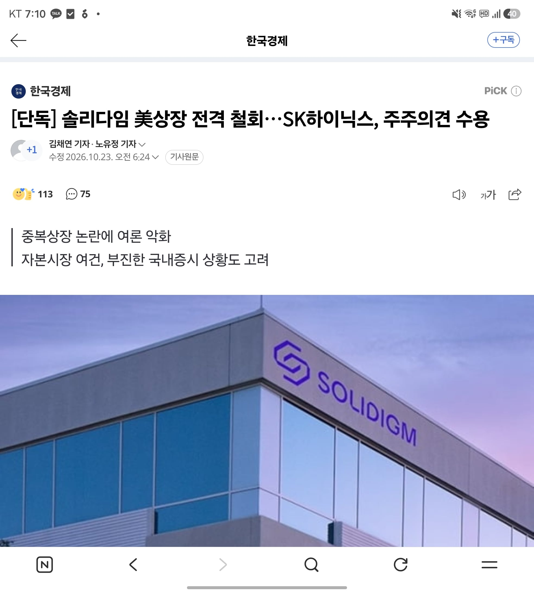

분할상장하면 별다른 보상 없이 재산유출
-> 아님 자회사 지분취득+솔리다임 추가 투자금까지 본주에 이득이 될 수 있음..
거기에 추가 기존주주 구체적 방안까지 나온거도 아니라 뭐 하기도전에 욕부터 박는게 어이없다는거임
그럼 그냥 파는거랑 분할상장해서 돈들어오는거랑 뭐가 얼마나 유리한지 깔끔히 설명을 하고 주주들을 설득을 하든가
분할상장하면 원이님 지분장난질에 엄청 유리한건 그냥 확정적인 사실인데, 그걸 감안하더라도 하닉에 얼마나 이득이고 주주한테도 얼마나 뽀찌가 돌아올지 설명을 하면되잖아? 그것도 못해서 개쳐맞다가 발뺀걸 뭐이리 변호해주고 있음?
A라는 회사가 성장가능성 높고, 기술 좋은 B라는 회사를 인수하면 주가 오르는 게 당연한 건데
그 B를 분할상장시키면 A 주가는 어떻게 된다?
미국이면 이런 케이스의 분할도 못하게 했음
이딴 생각을 가지고 있으니 국장이 도박장이라고
외인들에게 조롱이나 당하는거림
인텔도 모빌아이 산다음에 떼서 다시 상장함;;
그리고 솔리다임도 인텔에서 떼서 산거고...
이게 다른케이스임?
상장 철회 기념 이벤트로 솔리다임 P41 PLUS M.2 NVMe 2TB 50%할인 이벤트좀요
??? : 예? 저희가요? 왜용?
지금 하이닉스 양전 직전임.호재맞음.어제 나스닥 그리 쳐 맞았는데도 이 정도면 시장 반응은 긍정적이라 보는게 맞다.항상 삼전보다 더 빠졌는데 삼전보다 덜 빠지고.
태~원
오랫동안 존나 공들였는데 본인은 아쉽겠네 ㅋ
시발 왜 주식은 이모양인ㅁ데
이해가 안되는데?
하닉이 인수해서 자회사 만들었으면 하닉 재산이라 주주들 소유고, 그걸 분할상장하면 주주들에게 별다른 보상도 없이 하닉의 재산이 유출되는건데 그게 왜 주주 이익에 상충되는게 아님?
자회사로 들고있는거 팔고싶음 걍 팔아먹으면 그만이지, 굳이 소액주주에게 불이익하고, 태원이 AI컴퍼니 지분장난질에에는 극도로 유리한 솔리다임 분할상장이라는 방법을 굳이 사용하면서까지 매각을 해야함? 게다가 하닉이 현금이 없는 상황도 아니고
그런이유가 있었음 하닉이 언플 오지게 하면서 구구절절 주주한테도 이익이라는 점을 충분히 설득했겠지? 근데 했나? 개소리만 했지
아 참고로 난 하닉 주식 1주도 안들고있음